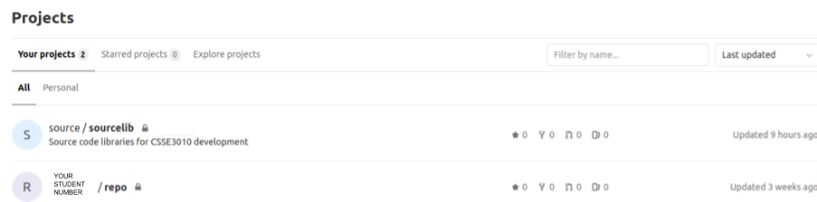
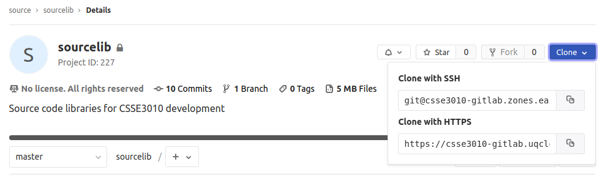
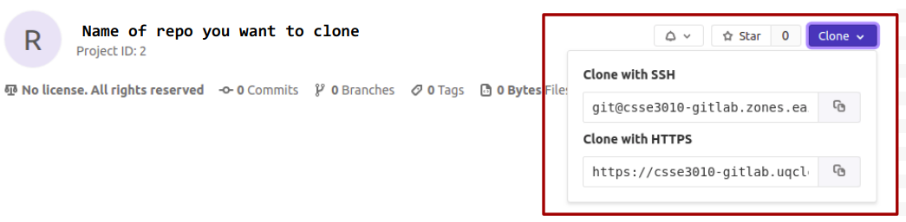

CSSE3010 Git Guide
Use Git to manage your development. Benefit: Git is an distributed repository that you can use to keep track of your current code history and use for backup purposes. You can check in changes when you need to, not just when you are connected to the Internet. This means that your git history will be more like a “workbook” or diary of your progress.
This document contains instructions on the following procedures:
- Setting up your git account
- Initialising the repository locally (Do this the first time only)
- Public Key Generation (For automatic authentication)
- Cloning your online repository
- Adding a .gitignore file (Do this once only)
- Committing changes using gitg (Each time an element of work is done)
- Synchronizing your local repository with the online repository (after each stage/project)
- Summary
- Using the Git Command Line Interface (CLI)
- Troubleshooting
Task 1: Setting up your git account
Access to your Gitlab account is via your UQ login, using single sign on (SSO). Browse CSSE3010/CSSE7301 Gitlab using the URL: https://csse3010.uqcloud.net/. Once logged in, you will see two repositories - the sourcelib repository and your empty repository.
|  |
|---|
| Figure 1: Logging into CSSE3010/CSSE7301 Gitlab for the first time |
Task 2: Initializing the repository locally
You will need to initialize your git repository locally and set up your global user name and user email. This is required to ensure that you can commit to your local repository. Open a terminal (in your Virtual Machine) and execute the following commands:
git config --global user.name "<MY.NAME>"
git config --global user.email MY.EMAIL@student.uq.edu.au
NOTE: <MY.NAME> eg. “joe student”.
If you're using your own Linux machine (NOT THE CSSE3010 VIRTUAL MACHINE)}, you will also need to set up a local csse3010 directory under your home directory for later tasks. NOTE: The csse3010 folder must be set up under the home directory in order for important environment variables to work properly. Refer to the mylib guide for the full folder hierarchy.
- Change into home directory:
cd ~ - Create a folder called csse3010:
mkdir csse3010
Task 3: Public Key Generation
You will need to generate a public and private key pair. The public key will need to be uploaded to your Gitlab account. This will allow your local git to be automatically authenticated to your online git account. Open a terminal and type the following commands:
- Generate key pair:
ssh-keygen - Display public key generated above:
cat ~/.ssh/id_rsa.pub
NOTE: press <enter> when asked for file location and pass-phrase. If you get asked if you want to overwrite the previous key, say 'yes'. The existing key in the virtual machine is a read-only "deploy" key for the sourcelib repository. Your new key will have more access than this key.
Copy+paste the public key to the "My SSH Keys" section under the "SSH" tab in your Gitlab account's "Profile Settings". When copying the key, make sure you copy the complete key starting with ssh-rsa and ending with your user-name and host. To copy in the terminal window, highlight your complete key, then right click on the highlighted content and select copy.
Back in your Gitlab account's "Profile Settings", click “Add an SSH key” and select a title for the key, eg. “csse3010vm”.
Also run the following command: ssh-add ~/.ssh/id_rsa
NOTE: For VirtualBox users, make sure “clipboard, bidirectional” is enabled.
Task 4: Cloning Your Repository
If you're bring your own Linux environment instead of the CSSE3010/CSSE7301 Virtual Machine, you will first need to clone the sourcelib repository into your csse3010 folder. Virtual Machine users will already have sourcelib cloned in the csse3010 folder. sourcelib contains example programs to help you get started on the Nucleo platform, as well as configuration and library files for the onboard MCU.
Execute the following commands:
- Change into your csse3010 directory: cd ~/csse3010
- Clone/copy the remote sourcelib repository into your csse3010 folder. This will automatically create a folder called sourcelib:
git clone git@csse3010-gitlab.zones.eait.uq.edu.au:source/sourcelib.git
The clone URL used in the second command can be copied from the Gitlab website. The one we used in the instructions above is the SSH URL.
|  |
|---|
| Figure 2: Git URL for cloning sourcelib |
It is strongly recommended that you obtain the URL from Gitlab instead of manually typing it out to avoid typos.
Repeat the above to set up your stages and project repositories.
|  |
|---|
| Figure 3: Git URL for cloning an existing repository |
You have now completed your local repository setup. You can now use the gitg program to commit your files. Note that committing files only stores files locally. It DOES NOT synchronise your local Git repository with your online repository. See Task 7 for details on how to do this.
When using git, you can graphically see the current history by running gitg . NOTE: you can be anywhere inside your git repository. If you ran the previous commands you should be in ~/csse3010/mylib (or any subdirectory of the project).
NOTE: there are two labels in your gitg window, a master branch and a origin/master branch. The master branch is on your local repository, and all branches prefixed with origin/ are on the remote server (CSSE3010/CSSE7301 Gitlab).
Task 5: Creating a .gitignore file
As your online Git repository is for code only, to remain clean, we add a “.gitignore” file to specify the extensions of certain files that should not be uploaded there. To do this, create a file called “.gitignore” in your repository, with one line for each type of file you want to ignore.
- Change into your mylib, stage or project folder:
cd ~/csse3010/mylib - Create .gitignore file by running the following command:
echo -en '*.bin\n*.bin\n*.hex\n*.elf\n*.swp\n*~\n*.o\n*.a\n.svn\n.depend' >> .gitignore - You can use any editor to view the file (nano, vim, etc.). To show the contents run:
cat .gitignore
Here is the contents of the .gitignore file:
*.bin
*.hex
*.elf
*.swp
*~
*.o
*.a
.svn
.depend
As time goes on, you can add more file types in the ignore file. In the example above, I have added object files (.obj), and binary (elf, hex) files as well as the temporary files (.swp) created by pluma.
 |
|---|
| Figure 3: gitg commit screen (click green icon, top right of dialog box) |
Task 6: Staging Files
Under normal development, you can use gitg to stage files, and commit them to your repository. This can be done under the ‘commit’ tab (green icon) seen in Figure 3.
To stage a file for committing, double click on the file (under “Unstaged”), which will add it to the list of “Staged” files.
To commit the staged files, add a commit message and click the commit button at the bottom of the screen (Figure 3).
Figure 4 shows the revised history after this commit.
 |
|---|
| Figure 4: gitg commit history |
NOTE: the two branches, origin/master and master now point to different commits as changes have not been synchronized.
Task 7: Synchronizing changes
To sync all the changes in our local repository to the online one on Gitlab, run the following command:
git push -u origin master
This will make origin/master (remote repo) and master (local repo) point at the same commit. The above command only has to be run once when pushing to the first time to an empty remote repository. Just git push will be sufficient thereafter.
Suggested Structure of your Stages Repository
Please refer to the mylib guide.
Each mylib component, stage or project should have a new directory. Also note that binary files such as “main.hex”, “main.bin” (which are built using your Makefile), should not be in the repository. You should add these extensions to the “.gitignore” file.
Summary of Important Commands
- To commit files, view history:
gitg - To get the latest changes from the online repository:
git pull - To push all your local commits to the online repository:
git push(orgit push -u origin masterif pushing for the first time to an empty remote repository) - If you are recovering from a HDD failure, use the commands in the original guide
git clone <URL>
Other tips
Commit changes regularly.
You will be required to put your changes into the online Gitlab (AT LEAST) after each assessment, every session, including stage, project, etc.
Command line git
If you don’t like the graphical tool gitg , it is possible to do everything on the command line. Here are some common commands:
- Stage a file for a commit: git add
<filename/file\_path/folder\_name/folder\_path> - Commit all staged files: git commit
<filename/file\_path/folder\_name/folder\_path> -m "your commit message" - Check on the status of the repository: git status
- See a log of previous commits: git log
- Stage all new/modified/deleted files to be committed, respects .gitignore (Not recommended)
- Revert all files to the last commit: git checkout .
Other useful tools:
- When running Git on larger projects or teams, branching is a very useful way to manage new features. Here is a 'game' which lets you practice git commands related to branching: Learn Git Branching
Troubleshooting
Error: "Could not resolve hostname csse3010-gitlab.zones.eait.uq.edu.au: No address associated with host"
- This URL should have been copied directly from the gitlab web interface. Typing this manually has the potential to cause typos to exist.
- This problem may be caused by your VM not being connected to the Internet. So: Make sure your computer (the “host”) is connected to the Internet. Reboot your VM. ** Try again (this seems to fix the problem 90\% of the time.
Error: Unable to do a git pull
"Your local changes to the following files would be overwritten by merge: Please, commit your changes or stash them before you can merge. Aborting"
Reset your git and completely overwrite your local changes - NOTE: ALL YOUR CHANGES WILL BE DELETED AND REPLACED BY THE ONLINE GIT FILES. Run the following commands:
git reset --hard HEAD
git pull
Alternatively (if this your own repository) commit your changes before running git pull , and git will attempt to merge your changes. This will only happen if you make changes on two different machines.
Error during clone: "fatal: protocol error: bad line length character: No s"
Most likely you are using the wrong repository URI. It is better to log into git and copy+paste the URI for your project (it will be something like git@csse3010-gitlab.zones.eait.uq.edu.au:12345678/mylib.git).